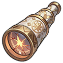
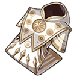
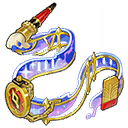

추천 광추
별이 밤하늘을 밝힐 때
전투 지원·필살기 화력
효과 자세히
코어 동력과 필살기를 중심으로 운용.
추궁할 수 없는 곳을 향해
치확과 필살기 보강
효과 자세히
필살기 중심 딜러의 대안.
은하철도의 밤
다수 적 공격력과 격파 후 피해
효과 자세히
적이 여러 명인 콘텐츠에서 효과가 커진다.
느낌 있는 아침 식사 루틴
망각의 정원 · 피해·공격력
효과 자세히
적 처치로 공격력 중첩.
추천 유물
별을 갈망하는 항법사 아집 4 · 추락한 별의 출항지 2
- 머리

주옵션HP부옵션치명타 확률 · 치명타 피해 · 공격력% · 속도 - 손
 주옵션공격력부옵션치명타 확률 · 치명타 피해 · 공격력% · 속도
주옵션공격력부옵션치명타 확률 · 치명타 피해 · 공격력% · 속도 - 몸통

주옵션치명타 확률 / 피해부옵션치명타 확률 (주옵션 제외) · 치명타 피해 · 공격력% · 속도 - 다리
 주옵션공격력%부옵션치명타 확률 · 치명타 피해 · 속도
주옵션공격력%부옵션치명타 확률 · 치명타 피해 · 속도 - 구체 주옵션공격력%부옵션치명타 확률 · 치명타 피해 · 속도
- 매듭

주옵션공격력%부옵션치명타 확률 · 치명타 피해 · 속도
이 조합을 추천하는 이유
선데이·등황과 함께 판결 지원을 활용합니다.
지식의 바다에 빠진 학자 4 · 기묘한 나나 낙원 2
- 머리
 주옵션HP부옵션치명타 확률 · 치명타 피해 · 공격력% · 속도
주옵션HP부옵션치명타 확률 · 치명타 피해 · 공격력% · 속도 - 손
 주옵션공격력부옵션치명타 확률 · 치명타 피해 · 공격력% · 속도
주옵션공격력부옵션치명타 확률 · 치명타 피해 · 공격력% · 속도 - 몸통
 주옵션치명타 확률 / 피해부옵션치명타 확률 (주옵션 제외) · 치명타 피해 · 공격력% · 속도
주옵션치명타 확률 / 피해부옵션치명타 확률 (주옵션 제외) · 치명타 피해 · 공격력% · 속도 - 다리
 주옵션속도부옵션치명타 확률 · 치명타 피해 · 공격력%
주옵션속도부옵션치명타 확률 · 치명타 피해 · 공격력% - 구체
 주옵션공격력% / 화염 피해부옵션치명타 확률 · 치명타 피해 · 공격력% (주옵션 제외) · 속도
주옵션공격력% / 화염 피해부옵션치명타 확률 · 치명타 피해 · 공격력% (주옵션 제외) · 속도 - 매듭
 주옵션공격력%부옵션치명타 확률 · 치명타 피해 · 속도
주옵션공격력%부옵션치명타 확률 · 치명타 피해 · 속도
이 조합을 추천하는 이유
웰트·Mar. 7th 등 공격 빈도가 높은 열차 동료와 편성합니다.
이 정도면 잘 키웠다
선택한 세팅 기준 · —는 확인된 수치 없음
- 종결 명함·전광
- 선데이·등황 편성
선데이·등황과 함께 판결 지원을 활용합니다.
| 스탯 | 추천 스탯 | 준종결 | 종결 |
|---|---|---|---|
| 공격력 | 3500 | — | 4400[1]공격력 구체 기준. |
| 치명타 확률 | 100%[2]선데이 치확 +20% 참고. | — | 100%[3]선데이 치확 +20% 참고. |
| 치명타 피해 | — | — | 160% |
세팅 기준·출처
별도 준종결 목표는 확인되지 않았습니다. 종결 표는 기본적으로 명함·전용 광추 기준입니다.
- 웰트·Mar. 7th 등 편성
웰트·Mar. 7th 등 공격 빈도가 높은 열차 동료와 편성합니다.
| 스탯 | 추천 스탯 | 준종결 | 종결 |
|---|---|---|---|
| 공격력 | 3300 | — | — |
| 속도 | 134+ | — | — |
성혼과 추천 돌파
지원 스킬 요건을 낮추려면 1돌, 횟수·피해와 동행 제약 완화는 2돌.
1전투 지원 스킬 촉발 +1회추천
판결 필요 필살기 −1회, 섬멸 필요 충전 −3pt. 추가 타격 +1.
2전투 지원 스킬 최대 2회추천
지원·필살기 피해 기존의 130%. 수기 신호 턴마다 +1회, 동행 외 대상도 보너스 턴.
3필살기 +2 · 일반 공격 +1
해당 스킬과 대응 강화 스킬의 레벨을 올린다.
4지원 스킬 저항 관통 팀 적용
히메코 자신은 추가 +10%p.
5전투 스킬·특성 +2
해당 스킬과 대응 강화 스킬의 레벨을 올린다.
6코어 최대 6 · 화염 저항 관통 +20%
지원 피해 +75%. 지원·광선에서 코어를 더 얻고 6pt 펄스 추가 광역 160%.
추천 파티


기본 운영과 행적
기본 운영
아군 필살기·지원 스킬로 프로토콜을 가동. 필살기에서 코어 수와 대상 수를 보며 광선과 펄스를 배분한다.
행적 육성 순서
특성 → 필살기 → 전투 스킬 → 일반 공격. 승급 2단계 자기 지원 스킬, 4단계 동행 보너스 턴 우선.
아하 속도 계산기 →